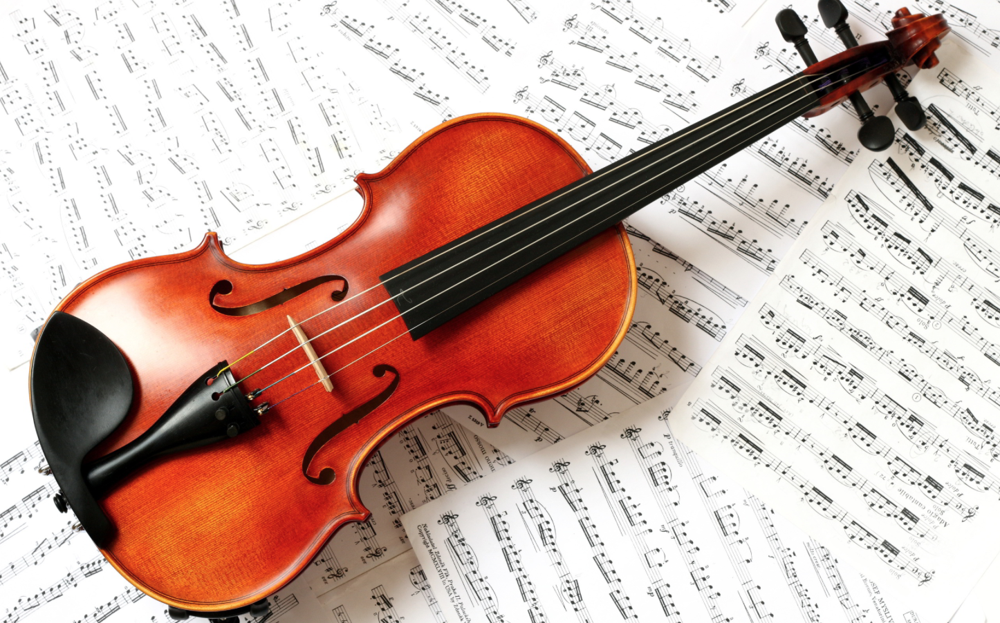
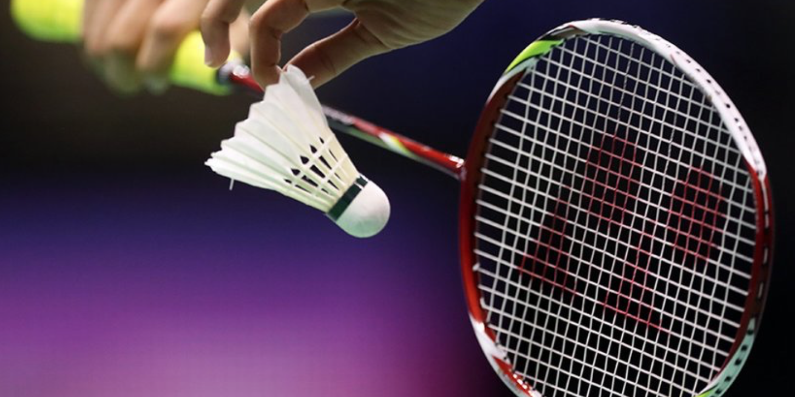
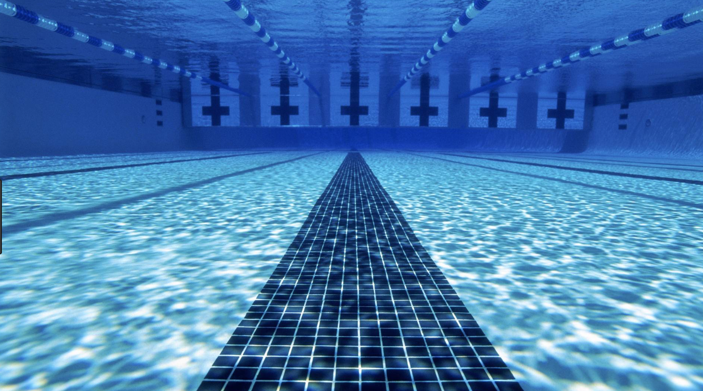

2022
Hi! My name is Monique Armelle Zulueta Dacanay. I was born and raised in Raleigh, North Carolina. I am a Cheatham-White Scholar, majoring in Biomedical Sciences and minoring in Spanish at North Carolina Central University as well as a Monica Chibuogu Nneji Foundation (MCNF), and NSHSS STEAM Scholar. I love swimming, playing badminton, playing the violin, drawing, making crafts, and much more!
Hello! My name is Monique Armelle Zulueta Dacanay. I was born in Raleigh, North Carolina. I am 15 years old and I study at Leesville Road High School. I have been in the Leesville schools from elementary to high school! I am a rising 10th grader. Next semester, I will be taking PreCalculus, Advance Orchestra, Chemistry, and AP Psychology. In school, I am involved in Key Club, Speech and Debate, Book Club, and FCA. I love swimming, playing badminton, playing the violin, drawing, making crafts, and much more!
In my free time, I enjoy playing the violin. Right now, I am playing two pieces, by Bach, Giga and Gavotte en Rondeau. Playing the violin is so much fun, and it is a way to take all the stress away. I am a part of the Raleigh Community Orchestra, and I also volunteer to help tutor the 6th grade orchestra after school. Last year I got in All State, which was a really cool experience, to be able to play with the best of the best.
I also love spending time with my family. I have a big brother named Michael. Together, as a family, we like to play board games, like Pictionary, watch movies, cook together, and more. In addition, we love traveling. I have been to China, Canada, and the Philippines. Locally, I have visited New York, New Jersey, Pennsylvania, Maryland, Washington D.C., Virginia, Tennessee, South Carolina, Georgia, Florida, Nevada, and California.
At Shodor, I am an apprentice for the 2017-2018 year. I joined Shodor to gain more knowledge about computational science and essential office and life skills. I enjoy going to Shodor. It is very fun, because I not only get to spend time with my fellow apprentices, but I also have opportunities, to model, make websites, use different and new languages and softwares, like HTML, CSS, PHP, Java Script, MySQL, AgentCubes, Vensim, and more!


